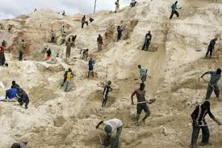
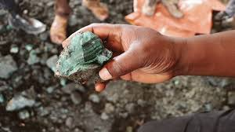
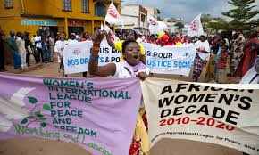

The genocide in Congo is the result of a complex web of historical and socio-political factors. One of the main drivers is the fight for control over the country's vast natural resources, including valuable minerals such as coltan, gold, and diamonds, which are essential for global industries. The scramble for these resources has fueled violent conflicts between various armed groups, government forces, and foreign actors, turning Congo into a battleground for exploitation.
Understanding the Causes


Resource Conflicts
Congo’s mineral wealth has made it a target for exploitation by both local militias and foreign corporations. The struggle for control over these resources has perpetuated violence and destabilized the region for decades. This conflict over land and minerals not only enriches a select few but has led to the suffering of millions, displaced from their homes and subjected to unimaginable brutality.

Political Instability
Decades of political instability in Congo have left the country vulnerable to both internal and external forces. Following years of dictatorship and weak governance, various factions vie for power, often resorting to violence to assert their dominance. This political chaos has compounded ethnic tensions, and with limited governmental control, much of the population is left defenseless against armed groups.